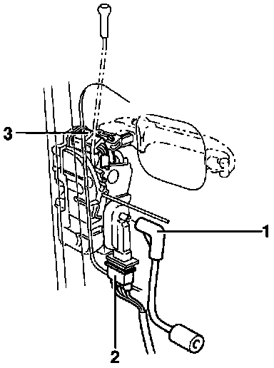

Front Door Actuator, Removing and Installing
Removing:- Remove front door trim.
- Partially remove vapor barrier.

- Disconnect bi-pressure hose -1- from actuator.
- Disconnect connector -2- from actuator and disconnect harness connector -3- from driver's or passenger door central locking switch.
- Remove door latch/lock with actuator Service and Repair
NOTE: On four-door vehicles the window regulator should be temporarily loosened for better installation

- Turn lock rotor to "closed" position.
- Remove Torx T15 screw -1-.
- Open retainers (arrows) and separate actuator from door latch/lock.

- When the actuator is removed, locking lever -1- slides out of the slot in striker -2-.
Installing:
- During installation locking lever -1- must engage striker -2-
NOTE: If the door latch/lock does not operate properly after the actuator is replaced, the complete assembly should be replaced as a unit.